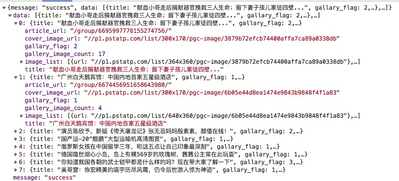

数据分类
非结构化数据：html
处理方法： re，Xpath，bs4等
结构化数据：json
处理方法： 将json格式的数据转化成Python的数据类型
JSON
JSON是一种轻量级的数据交换格式，它使得人们很容易进行阅读和编写。同时也方便了机器进行解析和生成，适用 于进行数据交互的场景，比如网站前台与后台之间的数据交互。

JSON语法规则
- 数据在名称/值对中
- 数据由逗号分隔
- 花括号保存对象
- 方括号保存数组
JSON 值
JSON 值可以是：
- 数字（整数或浮点数）
- 字符串（在双引号中）
- 逻辑值（true 或 false）
- 数组（在方括号中）
- 对象（在花括号中）
- null
JSON模块
通过Python的json模块，可以将字符串形式的json数据转化为字典，也可以将Python中的字典数据转化为字符串形式 的json数据。
Json 模块提供了四个方法： dumps（重点）、dump、loads（重点）、load。
dumps 和 dump
dumps(重点掌握)和dump 序列化方法
dumps只完成了序列化为str
dump必须传文件描述符，将序列化的str保存到文件中
# dumps 将“obj” 数据类型 转换为 JSON格式的字符串
dict1 = {
'Code': 200,
'Count': 657,
'Posts': [
{
'Id': 0,
'PostId': "1123178321664806912",
'RecruitPostId': 49691
},
{
'Id': 0,
'PostId': "1123178321664806912",
'RecruitPostId': 49691
}
]
}
json_dict = json.dumps(dict1)
print(json_dict)
print(type(json_dict))
# dump 两个动作，一个动作是将”obj“转换为JSON格式的字符串，还有一个动作是将字符串写入到文件中，也就是说文件描述符fp是必须要的参数
with open('./a.json','w') as f:
json_dict1 = json.dump(dict1,fp=f)
print(json_dict1)
print(type(json_dict1))
loads 和 load
loads(重点掌握)和load 反序列化方法
load 只接收文件描述符，完成了读取文件和反序列化
loads 只完成了反序列化
# loads 将包含str类型的JSON文档反序列化为一个python对象
dic = json.loads('{"name":"Tom", "age":23}')
print(dic)
print(type(dic))
# load 将一个包含JSON格式数据的可读文件饭序列化为一个python对象
with open("./a.json", "r",encoding='utf-8') as f:
aa = json.load(f)
print(aa)
print(type(aa))
参数介绍
对应于load和loads，dump的第一个参数是对象字典，第二个参数是文件对象，可以直接将转换后的json数据写入文 件，dumps的第一个参数是对象字典，其余都是可选参数。
dump和dumps的可选参数相同，这些参数都相当实用，现将用到的参数记录如下：
ensure_ascii 默认为True，保证转换后的json字符串中全部是ascii字符，非ascii字符都会被转义。如果数据中存在中文或其他非ascii字符，最好将ensure_ascii设置为False，保证输出结果正常。
indent 缩进，默认为None，没有缩进，设置为正整数时，输出的格式将按照indent指定的半角空格数缩进，相当实用。
separators 设置分隔符，默认的分隔符是(',', ': ')，如果需要自定义json中的分隔符，例如调整冒号前后的空格数，可以按照(item_separator, key_separator)的形式设置。
sort_keys 默认为False，设为True时，输出结果将按照字典中的key排序。